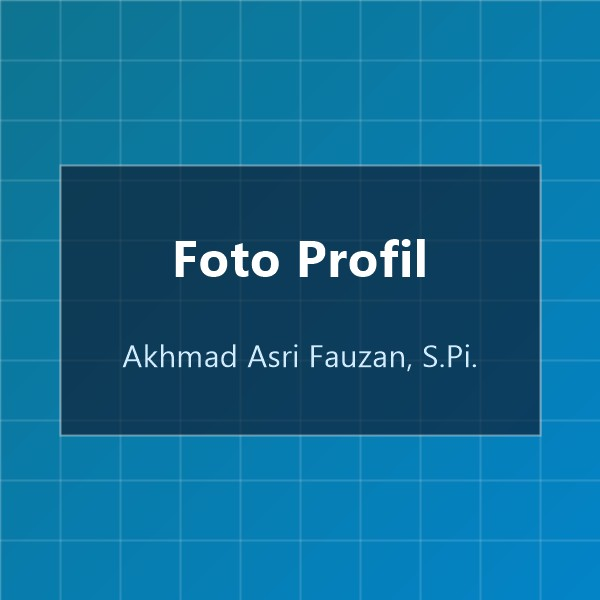

Akhmad Asri Fauzan, S.Pi.
Sarjana Sosial Ekonomi Perikanan dari Universitas Lambung Mangkurat. Berdedikasi dalam analisis potensi perikanan, ekonomi pesisir, dan pengembangan usaha berkelanjutan di Tanah Bumbu.
Biodata Pribadi
Rangkuman profil lengkap, riwayat pendidikan, dan gambaran umum mengenai kepribadian serta latar belakang saya.
Pribadi Adaptif, Solutif, dan Berintegritas
Saya adalah lulusan Sarjana Sosial Ekonomi Perikanan dari Universitas Lambung Mangkurat dengan minat mendalam pada tata kelola sumber daya perikanan, pemberdayaan masyarakat pesisir, serta peluang wirausaha maritim. Terbiasa berpikir analitis, teliti dalam menyusun data, serta adaptif dalam berkolaborasi lintas disiplin. Saya senantiasa bersemangat untuk mempelajari hal-hal baru dan memberikan kontribusi nyata bagi masyarakat dan lingkungan kerja.
Data Pokok Diri
TerverifikasiHobi & Kegemaran
Beberapa kegiatan positif yang rutin saya lakukan di waktu luang untuk menjaga kebugaran, memperluas wawasan, dan menyegarkan pikiran.
Memancing (Sport Fishing)
Menjelajahi titik-titik perairan muara dan pesisir Tanah Bumbu. Melatih kesabaran tinggi, fokus, serta memperdalam pemahaman langsung tentang keanekaragaman biota laut.
Fokus & KetelitianFotografi Alam & Pesisir
Mengabadikan keelokan panorama pantai, bentang alam Kalimantan Selatan, serta potret humanis aktivitas para nelayan lokal dalam bingkai visual yang berkesan.
Kreativitas & EstetikaOlahraga & Futsal
Rutin berolahraga untuk memelihara kesehatan tubuh dan stamina harian, sekaligus memupuk semangat sportivitas dan kekompakan bersama rekan-rekan sejawat.
Kebugaran & TimMembaca & Riset Mandiri
Menambah wawasan dari buku dan artikel seputar ekonomi maritim, manajemen agribisnis perikanan, serta tren teknologi terapan untuk membuka wawasan strategis.
Pengembangan DiriGaleri Rumah
Koleksi dokumentasi foto rumah dari empat sudut pandang. Klik pada salah satu foto untuk melihat tampilan diperbesar (lightbox).

Tampak Depan
Tampak Kanan

Tampak Kiri

Tampak Belakang
Video Rumah Saya
Pemutar video HTML5 responsif dengan rasio standar 16:9 untuk menampilkan suasana sekeliling hunian.
Tur Lingkungan Tempat Tinggal
Video singkat ini memperlihatkan lingkungan sekitar rumah tinggal, akses jalan utama, halaman, serta suasana asri pemukiman di kawasan Tanah Bumbu, Kalimantan Selatan.
Hubungi Saya
Tertarik untuk berdiskusi, bekerja sama, atau sekadar bertukar kabar? Anda dapat menghubungi saya langsung melalui tautan cepat berikut.